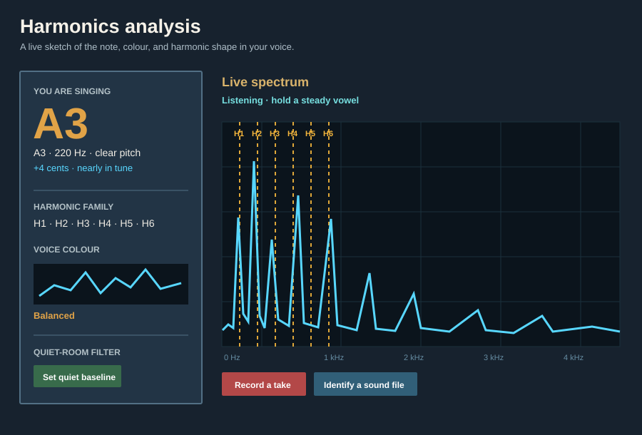
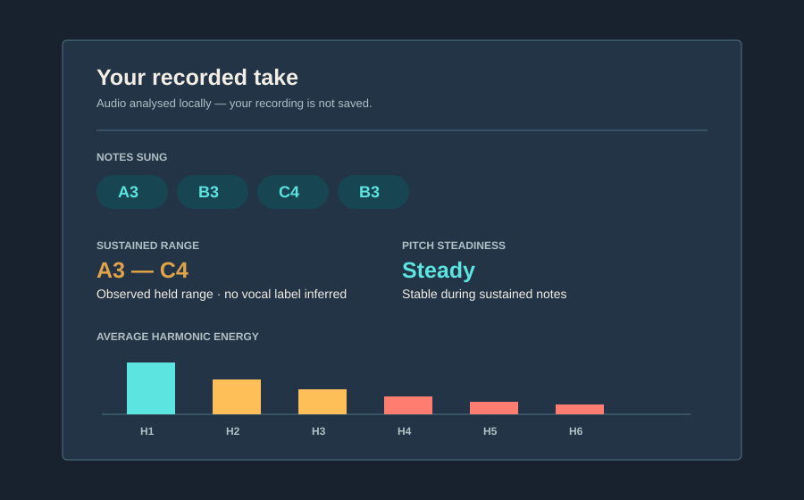

VOICE PRACTICE
Practice a sustained vowel
Hold “ah” or “oo” and watch the fundamental settle while the overtone pattern develops. Use the tuning readout to hear and see small corrections.
LOCAL VOICE + INSTRUMENT ANALYSIS
H₁ → H₆ the overtone field
Harmonics Analysis turns a microphone or sound file into a live, readable map of pitch, overtones, tuning, and tone colour—without sending audio anywhere.

Signal A steady vowel produces a fundamental plus a related harmonic stack.
Readout The app makes that stack legible, not merely visible.
Privacy Every frame stays on your computer.
THE SIGNAL PATH
Designed for curious singers, teachers, and musicians—not only signal-processing specialists.
Use a microphone or open a sound file. Audio is processed in memory locally.
A 4,096-sample FFT and harmonic scoring estimate the fundamental and confidence.
Amber H1–H6 guides show where a note’s overtones should land against the measured spectrum.
Record a phrase for note runs, steadiness, sustained range, and average harmonic energy.
A SPECTRUM WITH CONTEXT
The live view identifies the note and tuning offset, then relates the visible peaks to the harmonic family. The voice-colour panel summarizes where energy is concentrated: warm, balanced, or bright.

USE CASES
VOICE PRACTICE
Hold “ah” or “oo” and watch the fundamental settle while the overtone pattern develops. Use the tuning readout to hear and see small corrections.
RESONANCE
Try the same pitch with different resonance choices. The harmonic peaks and voice-colour strip make changes in brightness and warmth concrete.
PHRASE REVIEW
Record a take to see a cautious sequence of sustained notes, pitch steadiness, and the harmonic balance across the phrase.
INSTRUMENTS
Switch to instrument mode or decode a WAV, MP3, FLAC, or OGG file through the same local analysis pipeline.
DOCUMENTATION
Everything needed to run, build, integrate, or understand the analyzer lives in the repository.
PRIVACY BY DESIGN
Harmonics Analysis does not require an account, send telemetry, or upload microphone and file audio. Recordings are analysed in memory and summaries can be exported as text without including the audio itself.